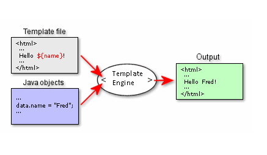
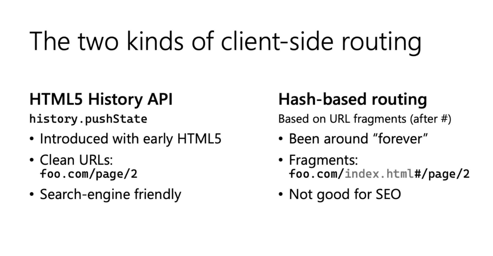

前端开发简史(How Frontend Dev. Evolves)
王福强
今天有同学提到一个话题：“今天我们是如何写前端的”， 我觉得应该很有普遍性，而且，我作为一个纯后端出身的曾经的程序员， 对于今天前端的发展也确实是很有兴趣，尤其是年岁越长，对前端的兴趣越浓，或许这就是中年男人的普遍特点吧，“能力”不够了，只能谈谈情怀、看看脸了，况且很多客户确实只看“脸”，哈哈哈
虽然我们可以把web的发展按照web 1.0 -> web 2.0 -> web 3.0这样的阶段和演化路径进行划分，但今天我打算按照自己组织的故事线来带大家回顾一下我眼里的前端开发是怎么演化到今天的，虽然我不是专业前端开发，但毕竟科普也不需要那么专业的去处理工程性问题，所以，如果你很介意“前端专业性”， 后面的文字其实就可以不用看了…
前端开发基础背景
我们都知道，从始至终， 前端开发的基础都是围绕着HTML、CSS和Javascript这三种前端基础技术展开的，可以说是前端开发三剑客，也是所有前端开发人员必须有的基础知识。
这三剑客中：
- HTML主管内容；
- CSS主管布局和“美色”；
- Javascript则主管页面中所有动态效果与交互；
HTML/CSS/Javascript三剑客的工作成果最终通过浏览器加过并输出给用户使用，最早期的浏览器以Mosaic/Netscape Navigator为典型代表。
前端开发第一阶段
第一阶段的前端开发以静态页面为主要形式， 页面布局有基于HTML table做的， 也有基于CSS做的, 至于页面的交互和动态性，这个阶段大多都是手动写一些零碎的javascript嵌入HTML页面或者自己组织代码重用， 很少有通用的框架可用。
这个时代的页面开发工具有两个帮派： “所见即所得”派和“文本编辑器”派（也可以叫手撸代码派）， 前者最典型的开发工具在那个时候使用的有微软(MS)的FrontPage以及Macromedia的Dreamweaver（当然， Dreamweaver还有两个兄弟叫Flash和Fireworks，俗称网页三剑客，也算当年的“网红”了）。
NOTE
这个时代除了Javascript，还有一个JScript，前者是Netscape公司搞出来的，后者是微软(MS)搞出了，他们之间并不兼容。 之所以提一下JScript，是因为虽然JScript最终也没有“成器”， 但后面微软(MS)依然会搞出ta自己生态里新的前端开发语言和生态。
前端开发第二阶段
随着前端技术和网络生态的发展，前端开发进入了规范化与动态化， 这个阶段最典型的就是Ajax技术和JQuery框架， 前端页面现在可以跟后端服务进行随时随地的交互和通信了，也不再完全依赖浏览器的通信机制做页面的整页加载和刷新了。
在这个时代节点上， 前端开发开始分化出“客户端渲染(Client-side Rendering)”和“服务器端渲染(Serverside Rendering)”两大流派，在此之前，大部分页面都是基于服务器端渲染，即由服务器端使用模板技术融合要返回给客户端的数据输出给浏览器直接可以加载的HTML页面内容：

有了Ajax的玩法之后，浏览器和服务器端通信的格式逐步从服务器端返回HTML演变为直接返回JSON数据， 直到今天(2021)，这种客户端和服务器端使用JSON作为数据和内容交互的玩法也依然是主流中的主流：
这个时代的浏览器从IE(微软的Internet Explorer)一家独大， 逐渐演化为百花齐放， 国外有Firefox, Chrome, Safari, Opera等，国内则有很多基于IE内核二次开发和封装出来的浏览器（当年的浏览器工具栏之战也是基于这个生态搞出来的）。
前端开发第三阶段
随着时代的发展， 用户对交互和体验的要求越来越高， 而且， 随着Chrome（以及底层Webkit技术）的一家独大，使用服务器端渲染以尽量避免浏览器兼容性的必要性也不大了，在Ajax技术的持续加持下， 前端开发的规范化和动态化更是向前迈进了一步： 整个前端开发迈入了SPA时代(Single Page Application)。
这个时代最典型的就是出现了三大新的前端开发框架： React， Vue以及Angular。 当然， 也有很多其他的框架，但从生态普及上来说，这三大框架最为普遍。
前端开发的理念在这个阶段逐渐侧重于：
- 基于组件化开发（component based， 相对于jquery时代的命令式开发-imperative based）；
- 客户端路由（相对于曾经的服务器端路由-routing);
- 更广的工具链与能力边界；
组件化
相对于前一个阶段使用Bootstrap和JQuery进行前端开发的玩法， 今天的三大框架几乎都支持基于组件的开发模式，前端开发人员从应用设计的思维到工程实践，都转上了组件化的大道。
组件化极大地简化了前端开发工作， 不管SPA如何复杂，基于组件的开发和组合思维都可以灵活应对自如，开发和维护都不再痛苦。
除了三大框架的支持，业界也逐渐演化出了像web component这样的规范，同样是想让这个时代的前端开发向着更为规范的方向发展。
TIP
个人比较喜欢一个叫shoelace的前端组件库，当然，这东西比较小众， 我也就是玩玩，要上生产，大家自行评估。
客户端路由
过去页面跳转都是通过传统的超链接和浏览器支持完成， 也就是页面的跳转和路由都由浏览器提交给服务器来区分和返回相应的页面或者片段， 进入新的SPA时代，页面内的交互和跳转基本上都在客户端浏览器内完成（不再与服务器端打交道）， 这得感谢三大框架(React/Vue/Angular)全都默认支持客户端路由，同时，相应的一些交互与组件之间的状态同步和存储等逻辑和支持，这时候也都挪到了客户端来处理， 像Redux之类的设计模式，也是这些场景下演化出来的。

更广的工具链与能力边界
今天的前端开发越来越复杂、也越来越强大，依然用HTML/CSS/Javascript三剑客基础设施已经不足以满足开发与交付需求，所以，前端开发的语言也不再只限于Javascript， 前端开发面向的场景和终端形态也不再只限于浏览器和桌面电脑。
语言层面， 前端开发从传统的Javascript动态语言已经演化为可以使用像Typescript(微软Again)/Java之类的静态语言， 相应的，也就引入了编译的过程以及依赖管理的需求。
从Google为业内引入V8引擎和NodeJS生态开始，npm/webpack等工具链几乎成为前端开发人员必备， 前端开发也不再能够像过去开发简单页面那样（直接文本编辑器引入css/js资源就开干），而需要安装工具链和依赖包，通过编译、压缩、打包等步骤完成前端应用的发布和部署。(这里会同时想起多年前@无尽同学给我解释babel在前端开发的场景中是一个什么的存在：解决语言版本兼容问题）
而且，今天的前端开发人员职责也不再只限于纯粹的前端页面和桌面web应用的开发，从前端到后端， 从web到手机APP/mobile应用以及各手机平台的小程序， 前端开发人员的职责和要求也越来越多，很多公司自然也顺势把前端团队增强为大前端团队（我当年称为“全端”团队）。
在纯web(pure web)与原生应用(mobile native)之间，还有一类混合嵌入(hybrid/embedded)的场景，比如今天的Electron和Visual Studio Code，也属于前端开发的领地之一。
小结
实际上， 前端开发之所以复杂，本质上还是因为处理问题的场景越来越复杂了，所以技术和生态也就越来越复杂，这与组织的复杂度以及像后端微服务之类的技术发展趋势其实是一致的。
如果各位看官还是意犹未尽，我不妨再提供一些视角提示，大家可以自行去探索其中之乐趣吧~
- static vs. dynamic
- server side vs. client side rendering
- imperative vs. declarative（jquery vs. htmx）
- components based vs. monolith layout based.
- pure web vs. embedded vs. hybrid scerarios and devices
- javascript vs. multiple language cross-compiling
「福强私学」来一个？
「福强私学」, 一部沉淀了个人成长、技术与架构、组织与管理以及商业上的方法与心法的百科全书。
开天窗，拉认知，订阅「福报」，即刻拥有自己的全模态人工智能。